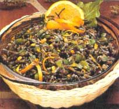
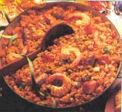
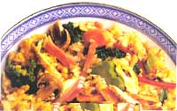

NATURAL HEALTH
MOTHER'S KITCHEN
AMY REICHMAN/ENVISION OTHERS:
STEVEN MARK NEEDHAMAN/ENVISION
It will come as no surprise to any member of my family that I'm writing about rice, one of my favorite foods. I was the "Queen of Rice" growing up, never tiring of ol' "Uncle Ben." I despised eggs for breakfast, and preferred a bowl of hot rice and milk topped with butter and cinnamon-sugar. My mother seldom had the time for special orders, so I looked forward to overnight visits at my grandparents who would spoil me with my breakfast treat.
While I was obsessing over rice, my baby brother was "Prince of Pasta," throwing a fit if he missed his daily fix of noodles or spaghetti. Young children seem to develop carbohydrate addictions, perhaps because children listen to their body's needs over its desires. I've never had a preschooler approach me with, "Boy, I sure could go for a 16-ounce steak!" It'll take a few years of fast food conditioning before a child's desires turn to beef.
Young (and old) bodies need a diet rich in complex, unrefined carbohydrates. Our American diets have, however, have given us an overabundance of protein; only vegetarians, body builders, and pregnant women should be overly concerned about their protein intake. Instead we could benefit by consuming more grains such as rice, which is the staple food of over half of the world's people.
Grains were once the dieter's forbidden food. (No starchy foods allowed!) However, we are now finding that because whole grains are rich in fiber and low in fat, they are excellent foods for weight watchers. Carbohydrates burn more calories than protein because up to one-third of the carbohydrates aren't digested and are excreted, unabsorbed. So some of the carbohydrate calories that you eat don't count. Complex carbohydrates are also high in fiber which fills you up so you eat less-not to mention the nutritional benefits of whole grains. Rice bran has been shown to have a cholesterol-lowering effect similar to oat bran.
With all of the choices of different types of rice, and so many interesting and flavorful varieties available on the market, we don't have to get stuck in a rice rut with plain old white rice anymore.
BROWN RICE
Brown rice is the whole unpolished rice grain with only the outer hull removed and the rice bran and germ remaining. It has a slightly nutty flavor and chewier texture than white rice. It is also the only form of rice containing vitamin E and substantial dietary fiber. (The quick-cooking variety, although lower in nutrients, is still superior to white rice-if saving 20 minutes is important to you.)
WHITE RICE
Converted : Of all white rices, converted is the most nutritious one to buy. This is because the process of steaming converted rice before milling forces about 70 percent of the nutrients back into the grain. There is some protein loss and almost all of the fiber is lost.
Enriched : Some of the nutrients that are lost in the polishing process are partially replaced in the "enriched" brands by spraying them on the surface of the rice. (Don't wash "enriched" rice before cooking it.)
Instant : This rice is partially cooked and then dehydrated, a process by which most of the nutrients are lost. (Therefore I don't recommend this type unless you are in a real hurry.)
Long Grain
Either white or brown, long grain rice has the largest kernels. After cooking, the grains remain fluffy and separate, making it perfect for pilafs, salads, and poultry stuffing.
Medium and Short Grain
Brown or white, these shorter grains have a cohesive quality so they produce a stickier rice.
Arborio
This is a short grain rice from Italy used in risotto. When cooked, it produces a creamy product with an al dente, chewy texture since it has the ability to consume large amounts of liquid.
Basmati
White or brown, basmati is an aromatic long grain rice with a nutty flavor grown in Iran or India.
Wehani
It is a brown, long grain aromatic rice which can be used instead of wild rice and is much less expensive.
Wild Rice
Wild rice is not truly a rice, but the seed of an aquatic plant usually hand-picked in the Great Lakes region.
Various types and varieties of rice are available by mail through:
Lundberg Family Farms
Box 369
Richvale, CA 95974
916/882-4551
Jambalaya
While grains were once the dieter's forbidden word, they are actually an
excellent food for weight watchers.
The Wishbone restaurant in Chicago serves delicious, southern-style home cooking at affordable prices. One of my favorites is their Jambalaya. Chef/owner Joel Nickson, adjusted his recipe for us to prepare at home.
1 3 to 4 pound chicken fryer, poached
1 teaspoon olive oil
5 cloves garlic, minced
1 large onion, chopped
½ cup cajun spice (see below)
½ teaspoon saffron (1 ounce envelope) or 1 teaspoon turmeric
3 cups hot chicken broth (saved from the chicken)
l½ cup uncooked white rice (do not use brown rice)
2 medium red peppers, sliced into ¼-inch strips
2 medium green peppers, sliced into ¼ inch-strips
¾ pound. Andouille* sausage or smoked sausage, sliced into thin circles
Louisiana Hot Sauce (optional)
Shrimp (optional):
7 to 8 medium shrimp in the shell
1 tablespoon olive oil
2 cloves garlic, minced
2 teaspoons cajun spice
Poach chicken in three cups water in covered pot on low heat for about one hour. Preheat oven to 350° F. After saving broth, de-bone and tear into bite-size pieces. Next, sauté garlic and onion until soft. Stir in cajun spice and saffron, then add hot broth, rice, peppers, chicken, and sausage. Transfer ingredients into a deep oven-proof casserole with a lid. Cover and bake for approximately 40 minutes, or until rice is thoroughly cooked. Taste to see if you prefer it any hotter. If taste is too bland, add a few drops of hot sauce, such as "Louisiana Hot Sauce."
Bulk Cajun spice:
1 cup paprika (Hungarian preferred)
½ cup salt
1/8 cup (3 tablespoons) cayenne pepper
1½ tablespoons white pepper
1/8 cup (3 tablespoons) garlic powder (not garlic salt)
1/8 teaspoon onion powder
1 tablespoon dried oregano
1 tablespoon dried thyme
Shrimp preparation: In a skillet, heat oil and sauté shrimp (in shell), garlic, and cajun spices until shrimp is done. Serve placed on top of Jambalaya.
*A creole sausage found at butchers or gourmet grocers.
Porcini Mushroom Risotto
This entree is at its best when prepared with fresh porcini or shitake mushrooms. Since these mushrooms are expensive, I buy a few ounces to add to regular mushrooms. Dried mushrooms may also be used if fresh porcini or shitake are unavailable.
½ cup pancetta (Italian bacon), diced
2 tablespoons olive oil
5 cloves garlic, minced
1 medium onion, diced
1 pound package arborio rice
1 cup white wine
2 cups chicken broth
1 cup water
¼ teaspoon cayenne pepper
½ pound mushrooms, chopped (porcini, shitake, button)
½ cup pecorino Romano or Parmesan cheese, grated
1/2 cup parsley, chopped freshly ground pepper
In a small non-stick skillet, fry pancetta until brown; set aside. In a large soup kettle, sauté garlic and onion. Add rice and cook on medium heat for a minute or two, stirring so rice doesn't stick or burn. Never put a lid on the pan. Add wine and cook for five minutes, stirring occasionally. When rice becomes dry, add one cup of chicken broth; cook for 10 minutes, stirring occasionally. Add other cup of broth and cook for 10 more minutes. Add water, cayenne, and mushrooms, cooking until rice begins to stick and isn't soupy. Stir in parsley and cheese. Add seasonings and ground pepper. Serve topped with extra parsley and grated cheese. Serves six.
2 tablespoons olive oil
4 cloves garlic, minced
1 medium onion, finely chopped
1½ cups arborio rice
1 cup chicken broth
1 can (28 ounces) Italian plum tomatoes, chopped. Save juice.
½ cup water
salt (optional)
freshly ground pepper
¼ teaspoon cayenne pepper
½ cup freshly grated parmesan or romano cheese
1/3 cup pesto sauce, homemade or bottled
In large pot, heat olive oil; add garlic and onions. Sauté but don't brown. Add rice and stir for one minute. Add broth and cook on medium heat (uncovered) for five minutes, stirring occasionally. When rice begins to stick, add tomatoes and juice. Cook for about 10 minutes until rice begins to stick again. Add seasonings, cheese, and pesto. Serve immediately topped with grated cheese.
Pesto
3 cloves garlic
2 tablespoons pine nuts or walnuts
2 cups fresh basil leaves (or substitute cilantro or parsley)
2 tablespoons lemon juice
2 tablespoons olive oil (or more if dry)
dash cayenne and salt
¼ cup freshly grated parmesan cheese
In food processor or by hand, chop garlic and nuts. Add basil and chop. Add rest of ingredients and blend. Serve immediately or freeze in plastic wrap-the pesto turns brown quickly.
Broccoli-Cheese Pie
Crust:
2 cups cooked, warm rice
1 tablespoon oil
1 tablespoon butter, melted
Filling:
1 teaspoon oil
1 small onion, minced
2 cups broccoli, chopped
2 eggs
½ cup low-fat milk
¼ teaspoon cayenne pepper
¼ teaspoon salt
1/8 teaspoon nutmeg freshly ground pepper
1½ cups low-fat cheddar cheese, grated
Preheat oven to 350° F. In a nine-inch pie pan, mix rice, butter, oil. Pat on bottom and sides. Bake for five minutes and remove. Sauté onion for about one minute in a small skillet or in the microwave. Place onion and broccoli on top of crust. In a blender or food processor, mix eggs, milk, pepper, salt, and nutmeg. Pour mixture over broccoli and onions. Sprinkle grated cheese on top. Bake 30 to 35 minutes until a knife placed in the center of pie comes out clean. (Don't over-bake or broccoli will be overcooked.)
2 cups long-grain, cooked brown rice (works best cooked at least one day before and refrigerated)
1 cup corn, fresh or frozen
1 15 ounce can of small red beans (kidney or black beans can be used instead)
1 green or red pepper, chopped
½ medium red onion, finely chopped
3-4 green onions, chopped
½ cup cilantro (or parsley), chopped
DRESSING:
1 large clove garlic, minced
1 small hot pepper, minced or ¼ teaspoons cayenne pepper juice from 1 lime
1 tablespoon oil
1 tablespoon red wine vinegar
½ teaspoon ground coriander
½ teaspoon ground cumin
1½ teaspoon chili powder pinch of sugar salt to serve
Stir dressing into salad and chill for an hour or so before serving.
Creamy Rice Pudding
This is a simple no-bake rice pudding to make with your children. It's good even for breakfast.
2 egg yolks
¼ cup maple syrup
1 tablespoon brown sugar
1 teaspoon cinnamon
1/8 teaspoon nutmeg
2 cups low-fat milk
3 cups cooked brown rice
1 teaspoon vanilla
½ cup golden raisins (optional)
In a blender put yolks, maple syrup, sugar, cinnamon, nutmeg, and milk. Blend until foamy. Pour into saucepan and add rice. Simmer on low heat, stirring occasionally, until pudding thickens slightly (about 20 minutes). It will continue to thicken as it chills. Stir in vanilla and raisins. Serve chilled, sprinkled with cinnamon.
Here are a few MOTHER tips for you from Lil Carry that will add some sass to ordinary white rice. First, wash rice with cold water twice. Then cover rice with an inch of water. If you intend to eat the rice with fish or fowl, add four chicken bouillon cubes before bringing the water to a boil. If you plan to eat the rice with beef, drop in four beef bouillon cubes.
|
 Wild rice salad |
 Jambalaya |
 Risotto |